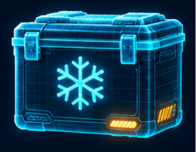

שומרים על הקור
המשלוח הגיע למרפאה. אבל מה קרה בדרך?
זמן קריאה משוער: כ־5 דקות

משלוח קטן עם תפקיד גדול
בכל יום שלישי יוצא רכב משלוחים אל מרפאה ביישוב מרוחק. בתוך הרכב נמצאים ארגזים עם ציוד רפואי ותרופות. יעל, שאחראית על המשלוחים, בודקת שהכול ארוז ומוכן לפני שהנהג יוצא לדרך.
רוב הארגזים יכולים לנסוע בתנאים רגילים. אבל אחד מהם דורש תשומת לב מיוחדת: יש בו תרופות שצריכות להישאר קרות. אם הן לא יישמרו לפי ההוראות שלהן, ייתכן שלא יהיה אפשר להשתמש בהן.
במרפאה מחכים למשלוח. יש אנשים שיגיעו לקבל את התרופות כבר באותו היום.
מהמקרר אל הכביש
בבוקר מוציאה יעל את התרופות מהמקרר ומעבירה אותן לארגז ששומר על קור. היא מצרפת אמצעי קירור וסוגרת היטב את המכסה. בתוך הארגז נמצא מדחום קטן.
הרכב יוצא בשעה שמונה. הנסיעה אמורה להימשך כשעתיים, אבל הנהג עוצר בדרך בשתי מרפאות נוספות.
בכל עצירה הוא פותח את הדלת האחורית ומחפש את הארגז המתאים. לפעמים הוא מוצא אותו מיד. לפעמים הוא מזיז כמה ארגזים והדלת נשארת פתוחה זמן רב יותר.
בחוץ השמש מתחזקת. האוויר שנכנס לרכב חם יותר מהאוויר שהיה בו בתחילת הנסיעה.
כשהדרך מתארכת
באותו יום יש עבודות בכביש. הנהג נאלץ לנסוע בדרך אחרת והמשלוח מגיע באיחור של כמעט שעה.
יעל יודעת שהארגז נועד לשמור על הקור, אבל היא אינה יודעת מה קרה בתוכו בזמן העיכוב. היא הייתה במשרד והארגז היה ברכב.
כשהנהג מגיע, ליאת, שעובדת במרפאה, פותחת את הארגז ובודקת את המדחום. באותו רגע הוא מראה טמפרטורה שמתאימה להוראות התרופות.
הכול נראה בסדר. ובכל זאת, ליאת נעצרת לפני שהיא מכניסה את התרופות למקרר.
בדיקה אחת, סיפור שלם?
המדחום מציג את הטמפרטורה עכשיו. הוא אינו שומר את התוצאות של הבדיקות הקודמות.
ליאת אינה יכולה לדעת אם הטמפרטורה נשארה מתאימה במשך כל הנסיעה. אולי היא השתנתה בזמן אחת העצירות? אולי אזור מסוים בארגז התחמם יותר מאזור אחר?
גם נגיעה בארגז מבחוץ אינה מספרת מה קרה לתרופות שבתוכו.
יעל בודקת את הרישום שלה. היא יודעת מתי הוציאה את התרופות מהמקרר ומתי הן הגיעו למרפאה. הנהג זוכר שהיה עיכוב, אבל אינו זוכר כמה זמן הייתה הדלת פתוחה בכל עצירה.
לא כל משלוח דומה לקודם
ביום קריר הדרך יכולה לעבור בלי עיכובים. ביום אחר השמש חזקה, הכביש עמוס והרכב עוצר יותר פעמים.
גם הארגזים אינם תמיד מלאים באותה מידה. לפעמים התרופות ממלאות כמעט את כל הארגז ולפעמים נשאר בו מקום רב.
יעל וליאת מחליטות לאסוף מידע במשך כמה משלוחים. הן רושמות את שעות היציאה וההגעה, את מספר העצירות ואת תוצאת המדידה כשהארגז נפתח.
אחרי שבועיים יש להן יותר פרטים, אבל עדיין אין להן תמונה מלאה של מה שמתרחש בתוך הארגז במהלך הנסיעה.
מה עדיין לא התברר?
במידע שנאסף לא מופיע כמה זמן הארגז שומר על התנאים המתאימים ביום חם. גם לא נבדק אם הטמפרטורה זהה בכל חלקיו.
לפני המשלוח הבא, יעל וליאת עוברות שוב על הרישומים. אילו פרטים יעזרו להן להבין טוב יותר את מה שקורה בדרך? ואיזה מידע חשוב שיהיה זמין בזמן הנסיעה ולא רק כשהמשלוח כבר מגיע?
רמז מעולם החלל
גם בחלל צריך להגן על ציוד מפני שינויי טמפרטורה. משתמשים לשם כך בחומרים שמאטים מעבר חום ובמערכות שעוקבות אחר התנאים.
אלו שתי יכולות שונות: האחת עוזרת לשמור על התנאים והשנייה עוזרת לדעת מה קורה. חשבו איזו מהן קשורה למקרה של יעל וליאת והאם כדאי לבדוק שילוב ביניהן.